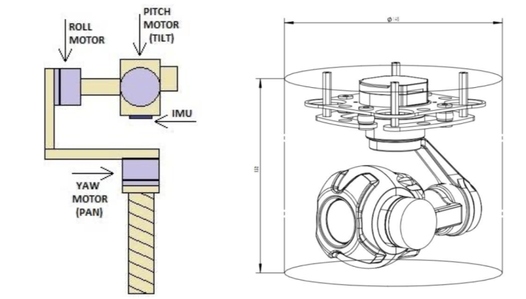
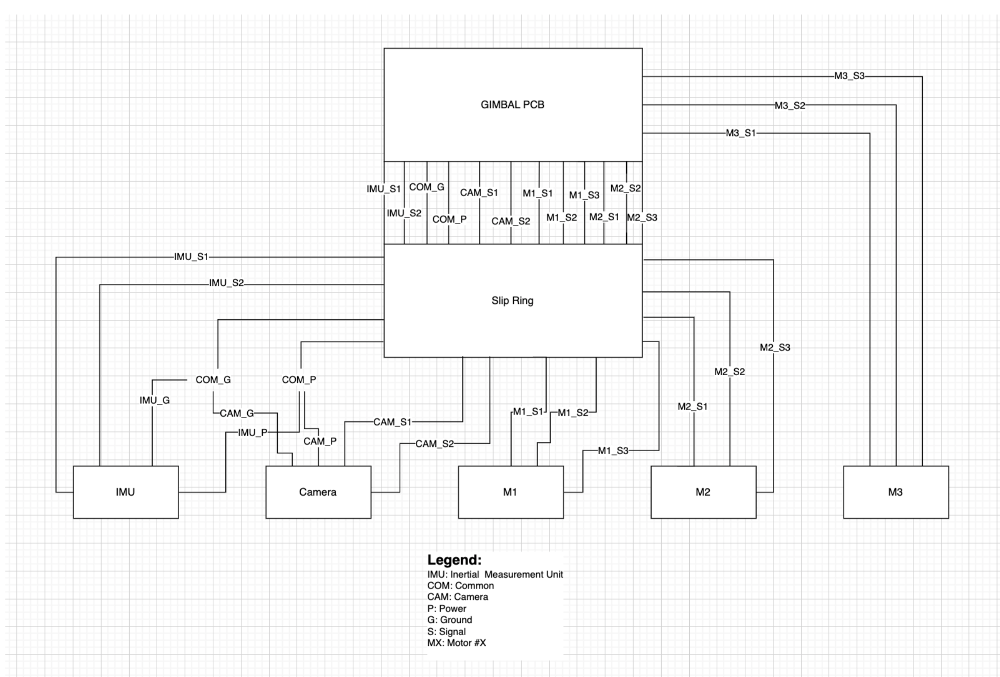

Gimbal and Live Video
Gimbal:- We plan to do a 3-axis gimbal system
- Using a BNO085 IMU and GM3506 brushless motors with encoders to stabilize the camera. The initial concepts for the gimbal design itself can be seen here. The yaw axis will need 360 degrees of freedom (thus requiring a slipring to prevent wires tangling), while the other two axes will be limited to 180 degrees of freedom
- The initial wiring diagram can also be seen here. An initial drop test of a test payload with a camera will be conducted later in the fall after which we will determine if scaling back to a single axis stabilizer is necessary
Live Video:
- Shall store video feed from a digital camera (720p 30fps) on an SD card via a Raspberry Pi Zero 2W. Video will also be converted to analog using the Raspberry Pi
- Analog video will be transmitted over 1.3GHz radio limited to 200mW transmission power (IREC rules). We will be using a Matek VTX module to do this. Module and range calculations are shown